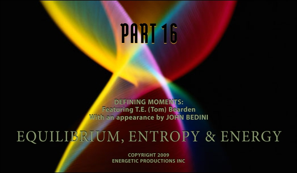
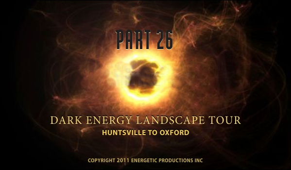
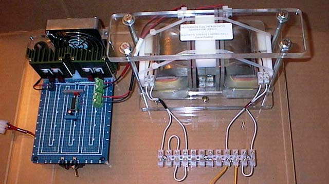
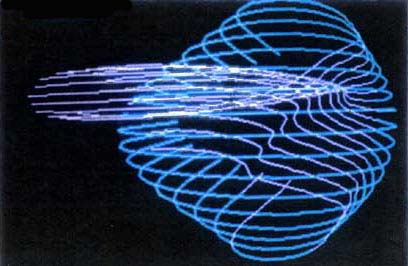

Lt. Col. Thomas Bearden (ret.) M.Sc.
The Tom Bearden Website
Lt. Col. Thomas Bearden (ret.) M.Sc.
|
“I
first found the web site while searching for information on free
energy. The information I have found here has been the best and
most reliable that I have found anywhere. Thank you for making this
available.” |
|
Multiple peer reviewed tests confirm results
Learn all about the overunity circuit in the Bedini Tesla Switch 3 hour DVD from John Bedini explains and demonstrates several working models Could be scaled up to power a car
Gasoline represents 36% of total global demand for
crude oil
Tom Bearden DVDs in the Energy from the VacuumTM
Science Series

 DARK ENERGY EXPLAINED
LATEST TOM BEARDEN DVD NOW AVAILABLE
“
I am convinced that Tom is one of mankind’s greatest scientists. His fantastic
ability to investigate tons of scientific literature from all around the world,
find connections between them and make his own observations is outstanding. The
significance of his work to the world in general, is inestimable (although those
whose businesses are endangered by his work think otherwise)”
—K, Professional Analog
Designer, April 2015
Energy from the vacuumTM
is clean and unlimited
|
|
Job Opportunities in Energy
|
 The Motionless Electromagnetic Generator (MEG) Has produced up to 100 times more power than was input, by extracting free energy from the vacuum. The MEG has been independently constructed, and its overunity performance independently replicated, by other researchers. US Patent awarded March 26, 2002. Invented by Tom Bearden and four colleagues.
But free electrical energy is nothing new U.S. Navy, General Electric and Stanford
University used free energy system in 1930s. Network Analyzer was
completely self-powered by
negative resistors
Westinghouse patented overunity process on Minuteman missile in 1960s
National Science Foundation letter to Tom Bearden “There is a uniform support for your out of the box thinking about conventional models and mathematical approaches.” —September, 2005
Newly developed
Grand
Unified Field Theory by
AIAS Director Dr.
Myron Evans provides solid mathematical grounding for the extraction of free EM
energy from the scalar curvature.
JUST RE-PRINTED

New Low Price! Tom Bearden's 2002 blockbuster “Energy from the Vacuum - Concepts & Principles” The world's first textbook that corrects the
errors in the foundations of science to validate the production of free energy
from the vacuum.
Learn the forbidden secrets of the mysterious
“negative energy”
which freezes connections when shorted out.
June 2000: The source charge problem—“the most difficult problem in classical and quantum electrodynamics”*—solved by Tom Bearden. *— Prof. Emeritus Dipak K. Sen,
DECEMBER 2015 TOM BEARDEN'S 1984 BOOK
|
All original Tom Bearden material on The Tom
Bearden Website is Copyright.
Contact the Webmaster for reproduction terms and conditions.
The phrase Energy from the Vacuum is a registered Trademark and
Servicemark
and may not be used without permission